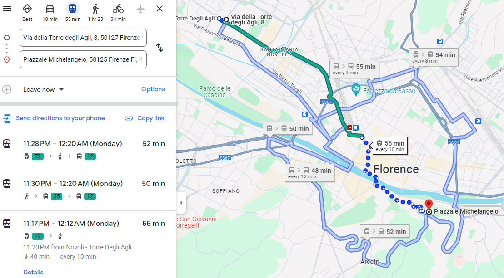
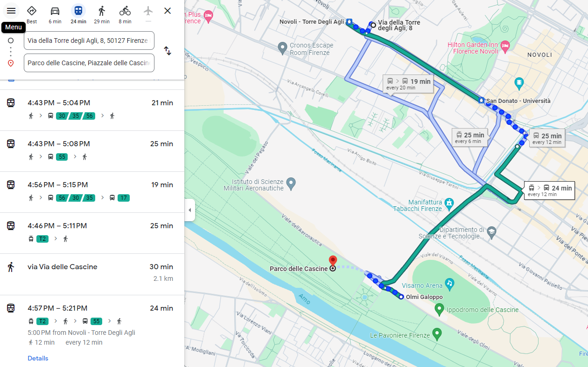
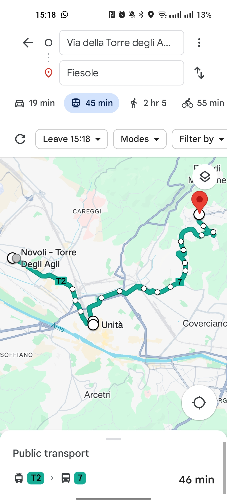

Trasporti pubblici
Di seguito puoi trovare le informazioni su come raggiungere il centro storico e altri luoghi d'interesse utilizzando i servizi di trasporto pubblico.
Fermata del tram più vicina
- La fermata del tram più vicina è Novoli - Torre degli Agli. È a solo 2 minuti a piedi da Via della Torre degli Agli, 8. Quando esci di casa, cammina lungo Via della Torre degli Agli e gira a destra in Via di Novoli attraversando la strada per raggiungere la fermata.
- Puoi acquistare i biglietti per il tram alle macchine automatiche disponibili presso tutte le fermate del tram. Acquista il tuo biglietto prima di salire, timbralo quando sali e, da quel momento, il bilgietto avrà una validità di 90 minuti e potrai utlizzarlo per ulteriori corse, se effettutate prima del termine della validtà del biglietto.
- Puoi trovare maggiori informazioni sulla rete tramviaria sul sito del gestore della rete: gestramvia.it


Per il centro storico
- Cuore pulsante della città, ricco di arte e storia, con capolavori come il Duomo, Ponte Vecchio e la Galleria degli Uffizi.
- Da Via della Torre degli Agli 8, raggiungi la fermata del tram e prendi il Tram T2 da Novoli - Torre Degli Agli fino alla fermata Unità, che si trova vicino alla stazione ferroviaria di Santa Maria Novella. Il viaggio in tram dura circa 19 minuti, con tram che passano ogni 6 minuti.


Per Piazzale Michelangelo
- Terrazza panoramica che offre una vista mozzafiato su Firenze, con una delle famose copie del David di Michelangelo in mezzo alla piazza e l'antica Abbazia di San Miniato al Monte a due passi.
- Da Via della Torre degli Agli 8, raggiungi la fermata del tram e prendi il Tram T2 da Novoli - Torre Degli Agli fino alla fermata Unità, che si trova vicino alla stazione ferroviaria di Santa Maria Novella. Il viaggio in tram dura circa 19 minuti, con tram che passano ogni 6 minuti.
- Dalla fermata del tram Unità, raggiungi in 2 minuti a piedi la fermata del bus Fratelli Rosselli. Da qui, prendi il bus 13, che dalla fermata Fratelli Rosseli arriva fino a Piazzale Michelangelo.
- In alternativa, puoi anche raggiungere Piazzale Michengelo a piedi dalla fermata del tram Unità. La camminata dura circa mezz'ora e permette di passare da alcune delle zone più belle e rinomate della città.



Per il Parco delle Cascine
- Il più ampio e grande parco urbano di Firenze. Situato lungo l'Arno, ideale per passeggiate, sport e relax, con spazi verdi ed eventi culturali.
- Se sei un amante del Rock e della musica in generale, non puoi perderti l'evento musicale dell'estate fiorentina, il Firenze Rocks. Il Firenze Rocks è anche il più grande festival musicale d'Italia e si tiene proprio al Parco delle Cascine, alla Visarno Arena, come di conseueto ogni anno a Giungo.
- Da Via della Torre degli Agli 8, puoi raggiungere il Parco delle Cascine a piedi. La camminata dura circa mezz'ora e permette di passare da alcuni punti d'interesse storico e culturale come, ad esempio, il Teatro Puccini e la Manifattura Tabacchi, ex fabbrica di tabacco trasformata in spazio culturale e creativo, sede di eventi, esposizioni e progetti innovativi.
- In alternativa, puoi anche raggiungere il Parco delle Cascine facendo un tratto del percorso con il tram ed il restante con il bus. Da Via della Torre degli Agli 8, raggiungi la fermata del tram e prendi il Tram T2 da Novoli - Torre Degli Agli fino alla fermata San Donato - Università. Da qui, raggiungi a piedi la fermata del bus Redi San Donato e prendi il bus 55 fino alla fermata Olmi Galoppo.



Per Fiesole
- Antico borgo collinare vicino a Firenze, noto per i suoi resti etruschi e romani, nonché per le splendide vedute sulla valle dell'Arno.
- Da Via della Torre degli Agli 8, raggiungi la fermata del tram e prendi il Tram T2 da Novoli - Torre Degli Agli fino alla fermata Unità, che si trova vicino alla stazione ferroviaria di Santa Maria Novella. Il viaggio in tram dura circa 19 minuti, con tram che passano ogni 6 minuti.
- Dalla fermata del tram Unità, raggiungi in 2 minuti a piedi la fermata del bus Stazione Nazionale. Da qui, prendi il bus 7, che dalla fermata Stazione Nazionale arriva fino a Fiesole.


Note
- L'appartamento offre una base strategica per esplorare la città.
- È a 2 minuti a piedi dalla fermata del tram Novoli - Torre degli Agli, che si trova sulla linea del Tram T2 che collega l'aeroporto al centro città e alla stazione ferroviaria di Santa Maria Novella.
- 10 minuti per l'aeroporto.
- 19 minuti per la stazione ferroviaria di Santa Maria Novella.
- 19 minuti per il centro città.